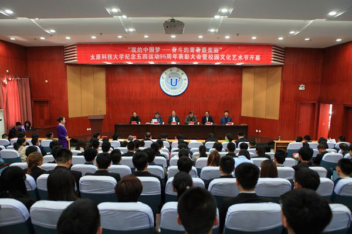
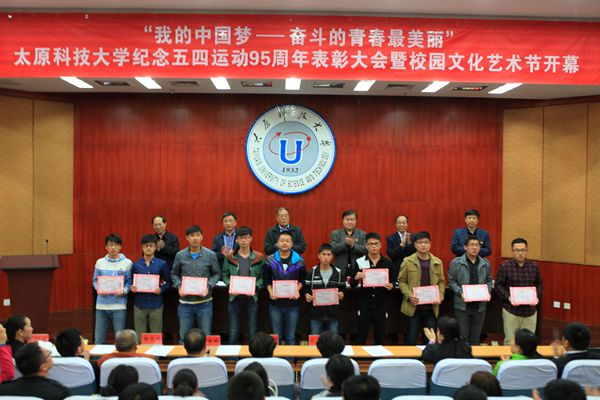

我校隆重召开纪念五四运动95周年表彰大会暨校园文化节开幕式
时间：2014-5-5 19:04:29团徽熠熠，照耀火红岁月；团旗飘飘，辉映青春年华。5月4日下午，我校纪念五四运动95周年表彰大会暨校园文化节开幕式在图书馆六层报告厅召开。校党委书记杨波，校长郭勇义，校党委副书记张飞，校党委副书记、副校长黄庆学，副校长徐格宁、副校长柴跃生以及学校有关部门和各学院（部）负责同志、各级共青团组织负责同志出席了大会。受到表彰的先进集体和个人代表与全校300余名团员青年参加了表彰大会。大会由校党委书记杨波主持。
杨波书记在主持会议时指出，5月3日，习近平总书记在给河北保定学院西部支教毕业生群体代表回信时讲，好儿女志在四方，有志者奋斗无悔。同人民一道拼搏、同祖国一道前进，服务人民、奉献祖国，是当代中国青年的正确方向。5月4日，总书记到北大参加“五四运动”95周年纪念活动时勉励北大学生，继续保持和坚守这种精神，成为实现中华民族伟大复兴的推动者和实践着。他强调，作为党的助手和后备军，希望全校各级共青团组织和全校团员青年在新的历史起点上，高擎“五四”火炬，弘扬“五四”精神，用奋斗的青春书写无悔的“青春梦”，用奋斗的青春描绘美丽的“科大梦”，用奋斗的青春托起幸福的“中国梦”。

校党委副书记张飞代表学校党委和行政向我校团员青年致以节日的问候，并向获得表彰的先进集体和个人表示由衷祝贺。张副书记向团员青年提出了殷切的希望：一是希望广大青年把学习文化知识和思想品德修养紧密结合起来，勤奋学习，自觉在历练人生中提升素质；二是希望广大青年把创新思维和社会实践紧密结合起来，开拓创新，积极投身社会实践；三是希望广大青年把全面发展和个性发展紧密结合起来，志存高远，自觉在奉献中实现人生价值。张副书记同时寄语广大青年学生要倍加珍惜大学美好时光，在学习、实践、奉献、奋斗和创造中领悟青春的瑰丽、人生的真谛和生命的价值，把“我的梦”融入“中国梦”的伟大事业中，以实际行动谱写壮丽的青春乐章。张副书记要求在即将开展的“情系中国梦，笃行青春路”第二届校园文化艺术节中，各基层团组织积极响应号召，周密部署，精心组织、广泛开展形式多样的校园文化活动，繁荣科大校园文化，凝练科大特色品牌，提升科大文化形象。

校党委副书记、副校长黄庆学宣读了表彰决定。会上还举行了颁奖仪式。大会共表彰了69个先进团支部、6个五四红旗团委、247名优秀团学干部、701名优秀团员、11名年度优秀青年教师、7名优秀团务工作者、16名年度优秀大学生、164名优秀青年青年志愿者、155名校园文化建设积极分子、10个优秀社团和1名学生科技创新先进个人。
会上，年度青年教师代表陈高华，科技创新先进个人杨正茂作了发言，校学生会主席薛宇鹏宣读了倡议书。获奖代表们在发言中纷纷表示，将继续传承“五四”精神，把青春梦融入国家的发展中，在推动学校发展、服务社会的进程中，在实现伟大中国梦的征途中，勇做走在时代前列的奋进者、开拓者和奉献者，以扎实有效的行动创造出新的青春业绩！